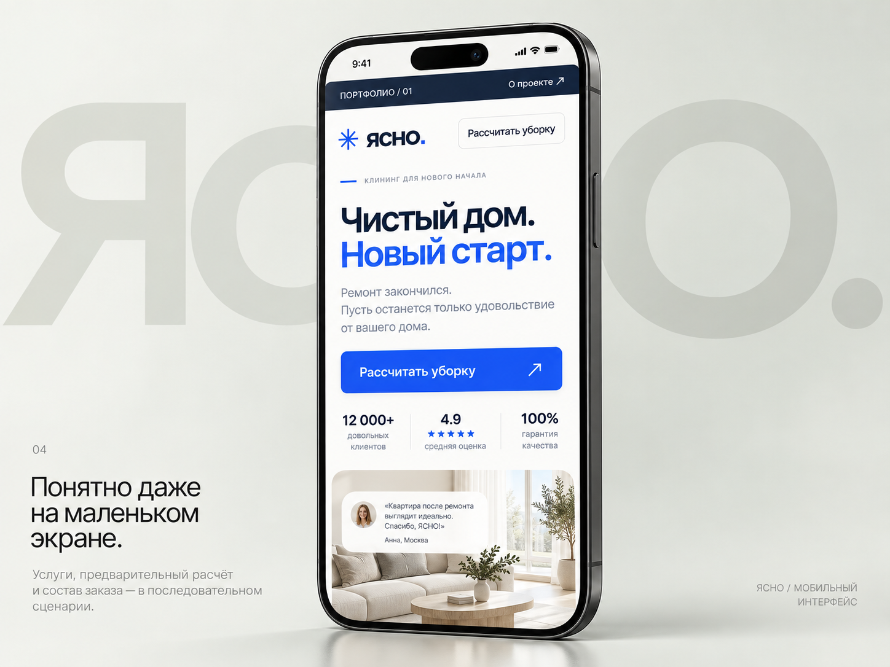
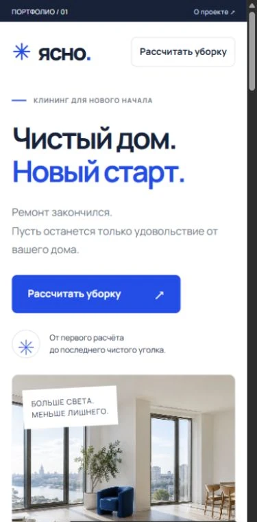

Листайте сайт внутри телефона.
Разрабатываю сайты.
Продумываю, как они выглядят.
И как ими пользуются.
Три концепта для разных задач. Каждый сайт можно открыть и попробовать.


Листайте сайт внутри телефона.
Иллюстрации, подбор букета по поводу и каталог. От первого знакомства до выбора цветов.
Я Кирилл. Делаю сайты, в которых внешний вид и логика работают вместе. Сначала разбираюсь в задаче бизнеса, затем собираю структуру, дизайн и интерфейс.
В работе использую код и ИИ-инструменты. Решения проверяю в браузере — на большом экране и на телефоне.
Для запуска услуги, продукта или отдельного предложения. Структура, визуальная концепция, адаптивная разработка и понятный путь к обращению.
Для бизнеса, которому нужно представить несколько услуг, показать работы или помочь выбрать из каталога. Продумываю навигацию, страницы и сценарии выбора.
Калькуляторы, подборщики, формы и концепции цифровых продуктов. Можно начать с отдельного сценария и проверить, насколько он удобен.
Связь сайта с мессенджерами и сервисами, автоматизация обработки заявок, боты. Это развивающееся направление: состав и возможность реализации обсуждаем отдельно.
01 / РазобратьсяОбсуждаем бизнес, аудиторию и задачу.
02 / СпроектироватьСогласуем структуру и визуальное направление.
03 / СобратьРазрабатываем, проверяем, готовим к запуску.
Напишите о бизнесе и о том, что хотите сделать.
Можно начать с пары предложений.
Если удобнее сначала собрать мысли — четыре вопроса о будущем сайте.